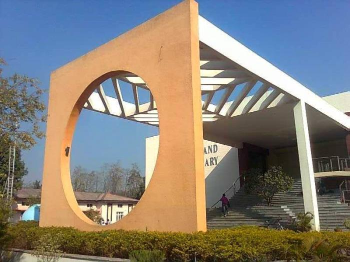
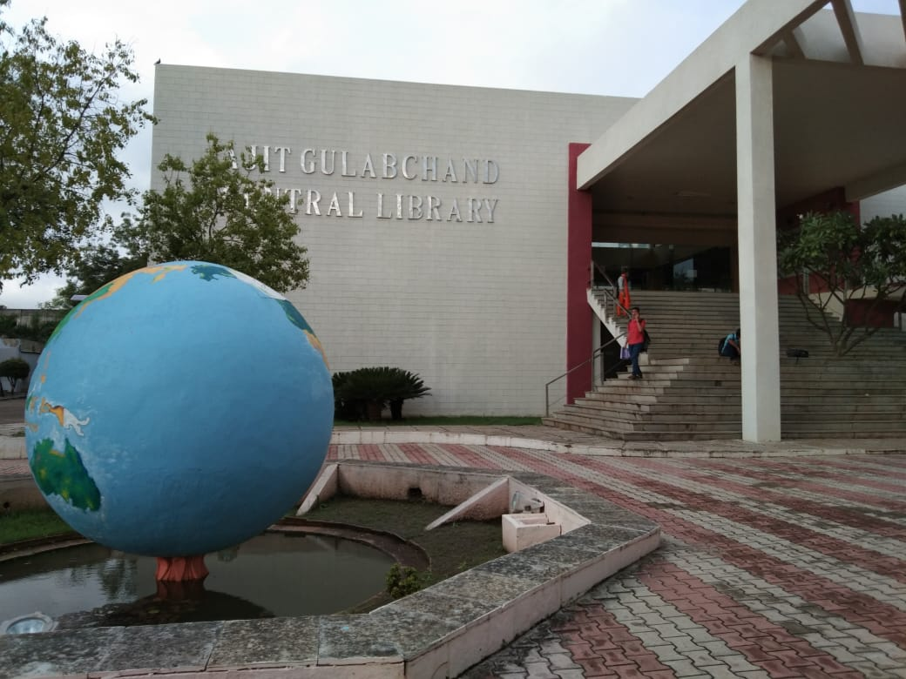
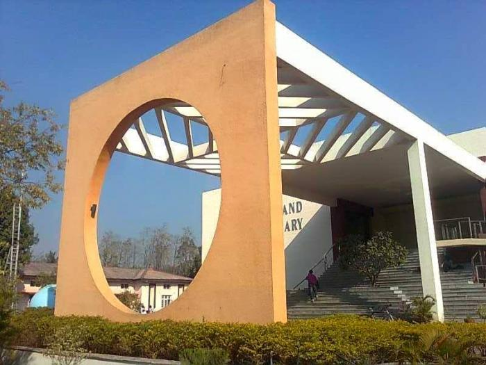
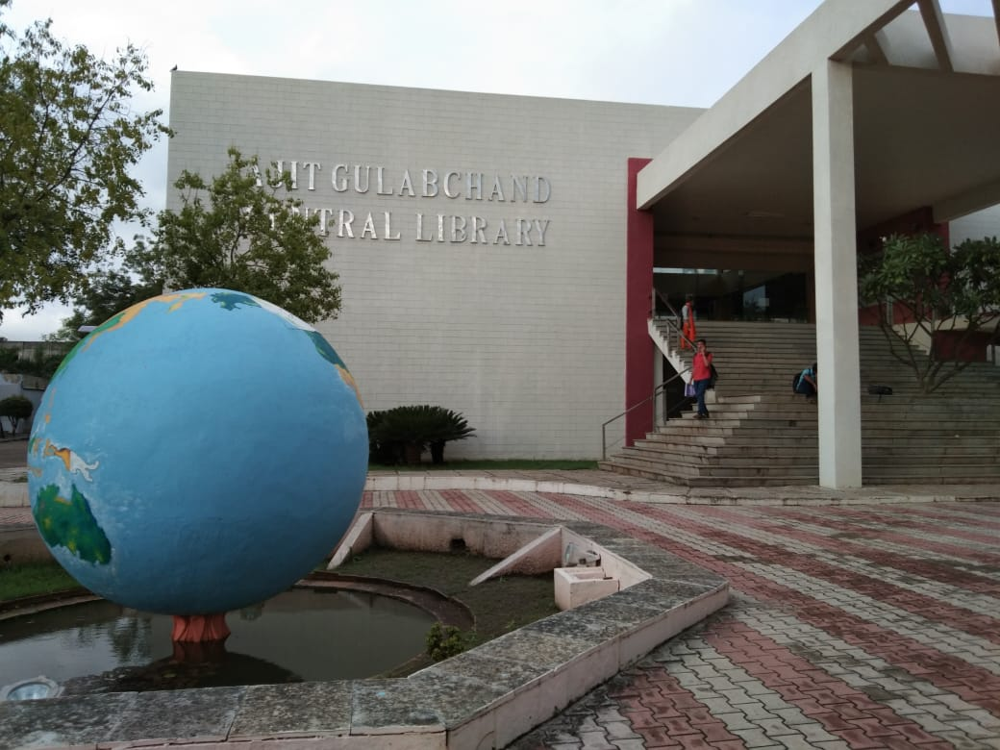

New state of art Library worth 4,680 sq.mt. Constructed is a generous donation received from “Walchand Hirachand Memorial Trust” Mumbai and renamed as “Ajit Gulabchand Central Library”. The spacious library of the college holds the total collection of reading material 106715 including 55480 Books, 13064 Bound Volumes of Technical / Non-Technical Journals, Magazines, 38171 Book Bank Books accumulated over last six decades. It subscribes to 80 Technical, 8 Science and 7 General Journal / Magazines. This library is member of INDEST under which we receive 20212+ Online journals including IEEE(464), IEEE Conference(19407), ASCE(36), ASME (30), Science Direct(275) and 2163 e-books.
Library is having Membership of DELNET, New Delhi for Inter Library Loan, Reference facility and document delivery services. Library is also participate N-LIST Inflibnet program through membership for e-journal and e-books.
Digital Library : A separate section is dedicated to digital library in AGC library where 60 terminals where provided. Library has purchased and developed with association of CCF, E-learning resources worth Rs.30 lacks and loaded at Central Server at CCF, This facility can be available from anywhere in the entire campus by students and staff as well. CD server is available for research student.
Library issue 1200 to 1300 book sets under book bank schemes including Social Welfare Department Free Book Bank Scheme for SC / ST scholarship holder students and also we issue TEQIP Tribal Book Bank free book bank for other categorized student.
Reading Hall facility is available round the clock for full year and provides study room facility during normal and extended hours.
Features
- Open Access to All Users.
- Staff 10 Books issued for one Semester.
- All P.G. Students 4 Books issued for 15 days.
- All Degree Students 2 Books issued for 7 days.
- All Diploma Students 1 Book issued for 7 days.
- Book Bank Facility to More than 1200 Students.
- Free Book Bank Facility to SC/ST Scholarship Students.
- Information Retrieval Lab (Internet) facility to all Readers.